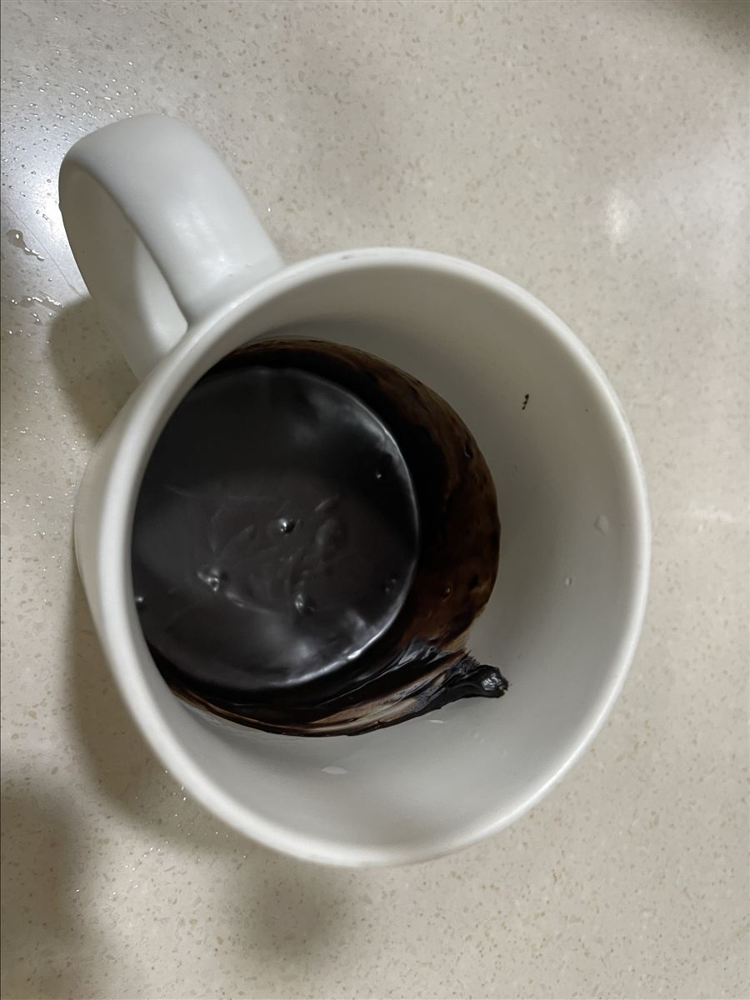
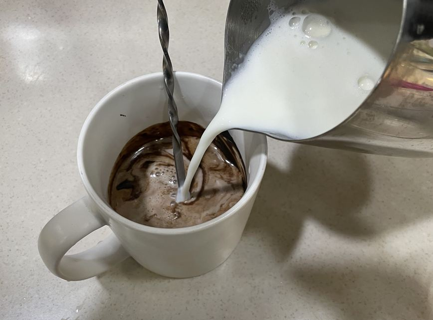
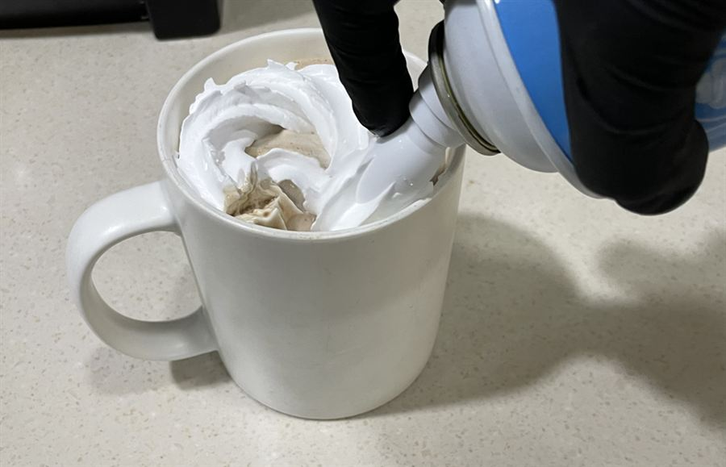
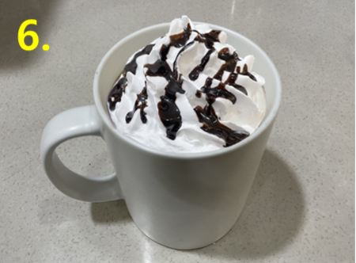

| 메뉴명 | 초콜릿라떼 HOT |
|---|---|
| 판매가격 | 5,000원 |
| 원재료 | 초코소스, 우유, 휘핑크림 |
| 사용 부자재 | 13oz 머그컵 또는 종이컵, 리드뚜껑, 홀더 |
※ 픽업 멘트 : "뜨거우니 조심하세요"
※ 휘핑크림 제외 시, 스팀우유를 담은 뒤, 우유폼 위에 초코소스 5g 지그재그 뿌린다.
제조방법

1
13온스 머그컵 또는 종이컵에 초코소스 2펌프(70g)을 넣는다.
13온스 머그컵 또는 종이컵에 초코소스 2펌프(70g)을 넣는다.

2
피쳐에 찬우유 220g을 담고 커피머신 스팀기 또는 WPM 스팀기로 스팀 우유를 만든다.
(※우유스팀 p.16, p23 참고)
(※뜨거우니 주의할 것!)
피쳐에 찬우유 220g을 담고 커피머신 스팀기 또는 WPM 스팀기로 스팀 우유를 만든다.
(※우유스팀 p.16, p23 참고)
(※뜨거우니 주의할 것!)

3
따뜻하게 데운 스팀 우유를 약간만 부어 초코소스가 섞이도록 저어준다.
따뜻하게 데운 스팀 우유를 약간만 부어 초코소스가 섞이도록 저어준다.

4
남은 스팀우유를 컵 윗면에서 2cm아래까지 부어준다.
(*생크림을 짜기 위해 가득 담지 않기)
남은 스팀우유를 컵 윗면에서 2cm아래까지 부어준다.
(*생크림을 짜기 위해 가득 담지 않기)

5
휘핑크림 3바퀴(25g)를 돌려 올려준다.
휘핑크림 3바퀴(25g)를 돌려 올려준다.

6
초코소스 5g을 드리즐하여 완성한다.
초코소스 5g을 드리즐하여 완성한다.